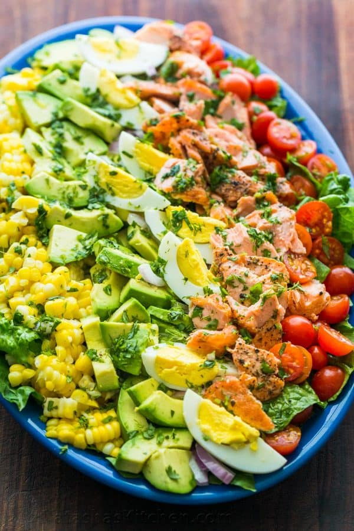

Salmon Cobb Salad

Description
Salty, yummy, refreshing, and light. The dill adds an unexpected, amazing flavor. It's addicting! Lots of great protein in this one, with the eggs and salmon.
Ingredients
Dressing:
- 3/4 cup buttermilk
- 1/2 cup mayonnaise
- 3 tablespoons chopped fresh dill
- 1 tablespoon lemon juice
- 1/2 teaspoon salt
Salad:
- 1 head Bibb lettuce, leaves separated
- 8 ounces cooked bacon, cut into pieces
- 1 avocado, cut into 1/2-inch pieces
- 3 hard-boiled eggs, quartered and halved
- 1 (3 ounce) package smoked salmon
- ground black pepper to taste
Steps
- Whisk buttermilk, mayonnaise, shallot, dill, lemon juice, and salt together in a bowl until dressing is smooth; refrigerate.
- Mix lettuce, bacon, avocado, eggs, and salmon together in a bowl. Add dressing and toss until coated; season with black pepper.